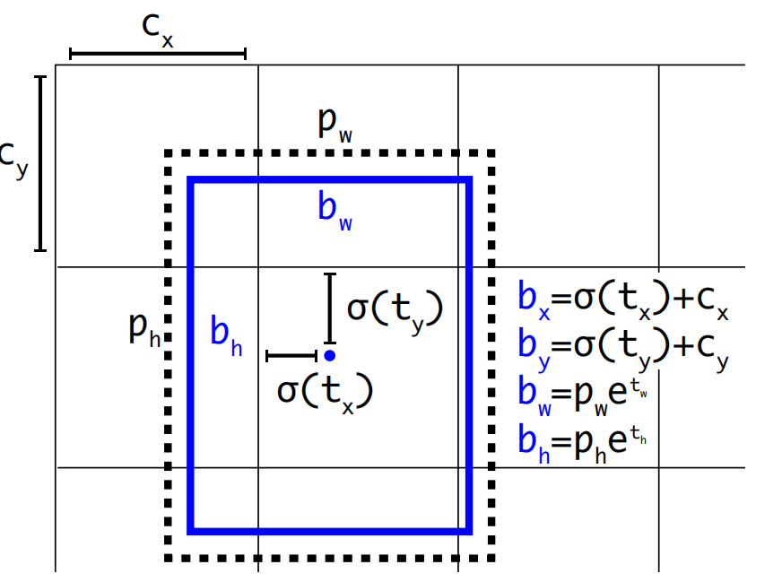

yolov2
序言
记录一下yolov2相关
Tricks
如图所示yolov2先是试了很多个tricks测试对性能的提升
BN
去掉了fc 不用dropout，加入了batch norm，所有的conv后都做了BN，训练更稳定，收敛更快，然后map从63.4涨到65.8
hi-res classifier
v1的时候是在224*224预训练的，但是测试的时候在448*448训练的，后面在448*448上面进行了10个epoch的微调，map涨了4%
anchor boxes
v1只有两个，且没有直顶比例，scales，而fast rcnn里面是9个先验框（3个scales，3个比例），这些先验框是常规的但不一定适合数据集
这里用聚类的方法提取先验框，比如在Coco里面，把所有的标注框用k-means聚成5类，每类的类中心（h，w）作为先验框的长宽
距离定义为1-IOU：\(d(box, centroids)=1-IOU(box, centroids)\)，不能用欧氏距离是因为大框的差异大，小框的差异小，不够合理，所以用IOU，IOU越大表示越接近。k>5的时候收益不大
但是实际上加上anchor后，map实际上没什么变化（下降了0.3）,但是recall涨了8个点（0.81->0.88）
backbone
基本把VGG和resnet合并，实际的输入是416*416（希望最后的结果是奇数，让中心点落在cell里面）没有fc，全是卷积，5个maxpool降采样（原图的\(\frac{1}{32}\)），所以最后的结果是一个\(13\times13\)的feature，对小物体也友好，
优点：fc容易overfit，参数量少
location prediction

和v1不一样，v1直接预测坐标和框大小，这里预测的是偏移量(\(t_{x}、t_{y}\))和缩放量(\(t_{w}、t_{h}\))，然后如果不限制的话，可能会造成模型的不稳定